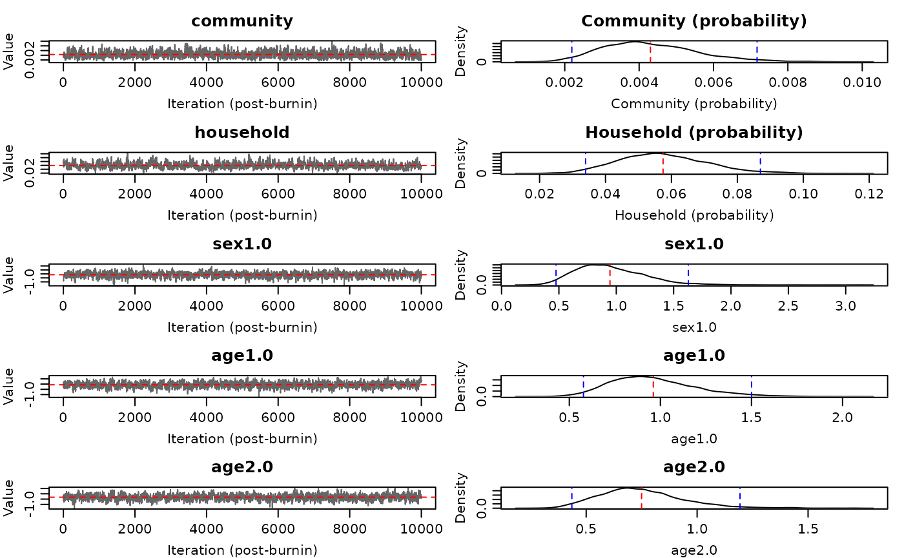
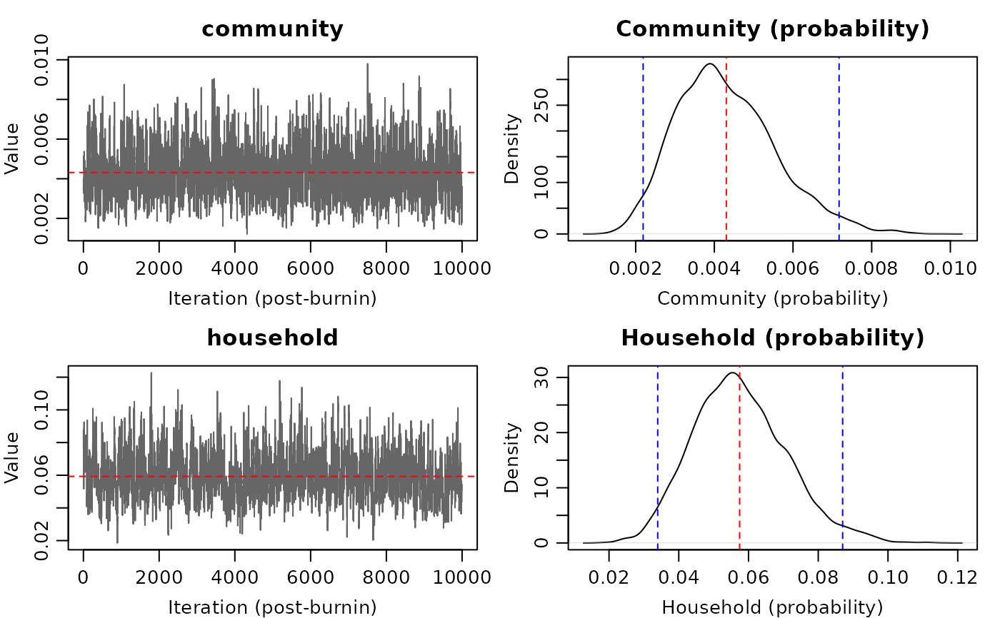

Produces trace plots and posterior density plots for each estimated parameter.
Trace plots show the MCMC chain with the posterior mean (red dashed line).
Density plots show the marginal posterior with 95% credible interval bounds
(blue dashed lines). Set show_ess = TRUE to annotate with effective
sample size.
Arguments
- fit
An object of class
hhdynamics_fit.- params
Optional character vector of parameter names to plot. If
NULL(default), all estimated parameters are plotted (fixed parameters likesize_paramare skipped).- show_ess
Logical. If
TRUE, show the effective sample size (ESS) in the density plot title. Default:FALSE.
Details
Community and household parameters are shown on the probability scale
(via the 1 - exp(-x) transform).
Examples
# \donttest{
data(inputdata)
fit <- household_dynamics(inputdata, ~sex, ~age,
n_iteration = 15000, burnin = 5000, thinning = 1)
#> Iteration: 1000
#> Iteration: 2000
#> Iteration: 3000
#> Iteration: 4000
#> Iteration: 5000
#> Iteration: 6000
#> Iteration: 7000
#> Iteration: 8000
#> Iteration: 9000
#> Iteration: 10000
#> Iteration: 11000
#> Iteration: 12000
#> Iteration: 13000
#> Iteration: 14000
#> The running time is 41 seconds
plot_diagnostics(fit)

plot_diagnostics(fit, params = c("community", "household"))

# }